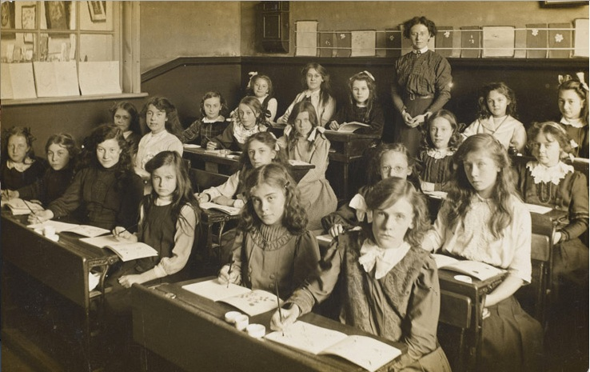
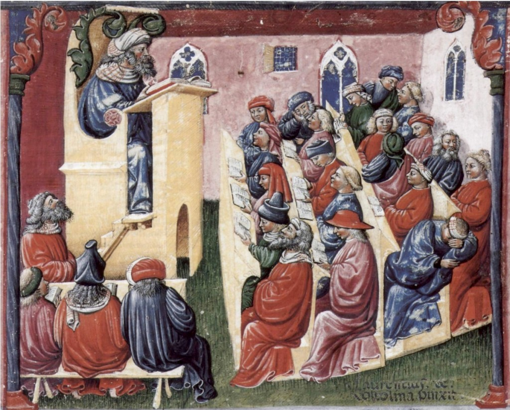
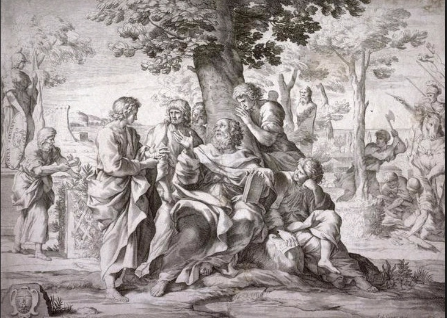
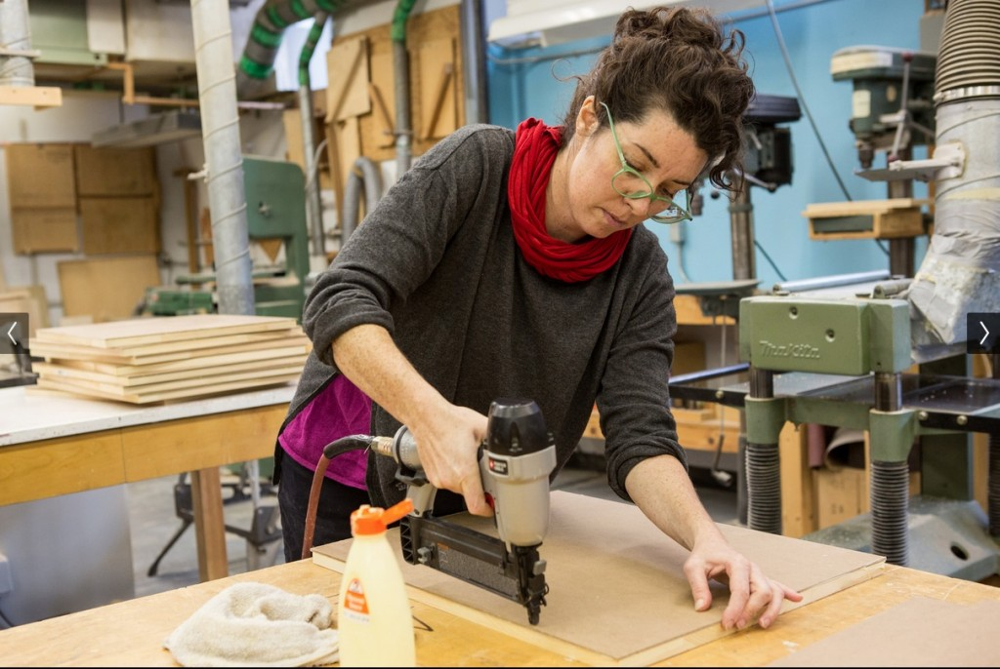
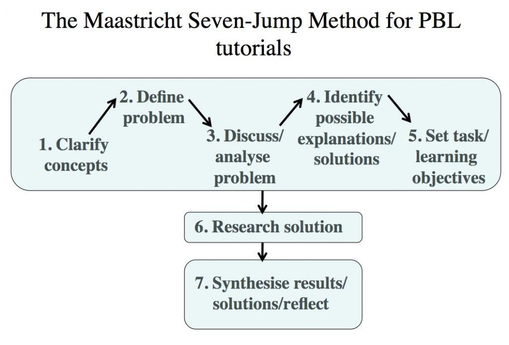
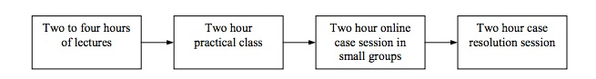
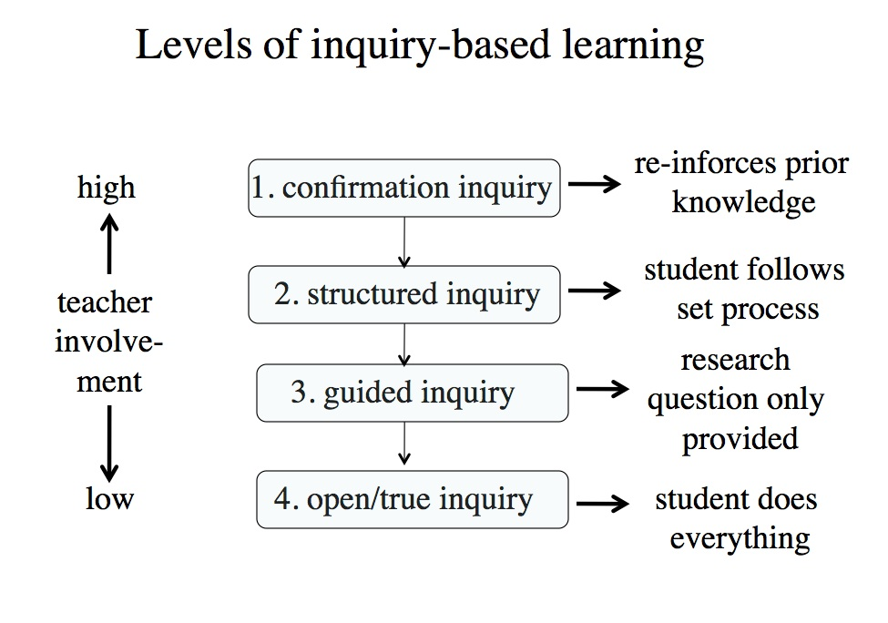

Chapter 3
Methods of teaching: campus-focused
Teaching in a Digital Age
Overview
What is covered in this chapter
Five perspectives on teaching are examined and related to epistemologies and theories of learning, with a particular emphasis on their relevance to a digital age. In particular this chapter covers the following topics:
- Scenario D: A stats lecturer fights the system
- 3.1 Five perspectives on teaching
- 3.2 The origins of the classroom design model
- 3.3 Transmissive lectures: learning by listening
- 3.4 Interactive lectures, seminars, and tutorials: learning by talking
- 3.5 Apprenticeship: learning by doing (1)
- 3.6 Experiential learning: learning by doing (2)
- 3.7 The nurturing and social reform models of teaching: learning by feeling
- 3.8 Main conclusions
Also in this chapter you will find the following activities:
- Activity 3.3 The future of lectures
- Activity 3.4 Developing conceptual learning
- Activity 3.5 Applying apprenticeship to university teaching
- Activity 3.6 Assessing experiential design models
- Activity 3.7 Nurturing, social reform and connectivism
Clive (looking carefully at his partner, Jean): So what went wrong at work today?
Jean: So you noticed – nice.
Clive: Now don’t take it out on me. How could I have avoided the slamming of the door, the shouting at the cat, and the almost instant demand for a large glass of wine – which incidentally is sitting on your desk?
Jean (grabbing the wine). Well, today was the last straw. I got the results of the student end-of-term evaluation of my new class I’ve been teaching.
Clive: Bad, eh?
Jean: Well, first the rankings are odd: about 30 per cent As, about 5 per cent Bs, 15 per cent Cs, 15 per cent D’s and 35 per cent E’s – NOT a normal curve of distribution! They either loved me or hated me, but the average – which is all Harvey, the stupid head of department, looks at – came out as a D, which means any chance of a promotion next year just went straight out the window. I’m now going to have to explain myself to that old buffoon who last taught a class when slate tablets were the latest technology.
Clive: I’m not going to say I told you so, but…..
Jean: DON’T go there. I know I’m bloody mad to have stopped lecturing and tried to engage the students more. I could kill that faculty development guy who persuaded me to change how I teach. I didn’t mind all the extra work, not even the continual fighting with the guy from Facilities who kept telling me to put all the tables and chairs back properly – he was just a jerk – and I loved the actual teaching, which was stimulating and deeply satisfying, but what really finished me was when the department wouldn’t change the exam. I’ve been trying to get the kids to question what is meant by a sample, discuss alternative ways of looking at significance, solve problems, and then they go and give the poor kids multiple-choice questions that just assessed their memory of statistical techniques and formulae. No wonder most of the students were mad at me.
Clive: But you’ve always claimed that the students enjoyed your new way of teaching.
Jean: Well, I was fooled by them. From the student comments on the evaluation, it seemed that about a third of them really did like the lessons and some even said it opened up their eyes to what statistics is all about, but apparently what the rest wanted was just a crib sheet they could use to answer the exam questions.
Clive: So what are you going to do now?
Jean: I honestly don’t know. I know what I’m doing is right, now I’ve been through all the changes. Those kids won’t have crib sheets when they start work, they will have to interpret data, and when they get into advanced level science and engineering courses they won’t be able to use statistics properly if I just teach to the exam. They will know a bit about statistics but not how to do it properly.
Clive: So you’ll have to get the department to agree to changing the exam.
Jean: Yeah, good luck with that, because everyone else will have to change how they teach if we do that.
Clive: But I thought the whole reason for you changing your teaching was that the university was worried it wasn’t producing graduates with the right kind of skills and knowledge needed today.
Jean: You’re right, but the problem is Harvey won’t support me – he’s old school down to his socks and underpants and thinks that what I am doing is just trendy – and without his support there’s no way the rest of the department is going to change.
Clive: OK, so just relax for now and have a glass of wine and we’ll go out somewhere nice for dinner. That will help clear my mind of the thought of Harvey in his socks and underpants. Then you can hear about my day.
The first thing to be said about teaching methods is that there is no law or rule that says teaching methods are driven by theories of learning. Especially in post-secondary education, most instructors would be surprised if their teaching was labelled as behaviourist or constructivist. On the other hand, it would be less than accurate to call such teaching ‘theory-free’. We have seen how views about the nature of knowledge are likely to impact on preferred teaching methods. But it would be unwise to press this too hard. A great deal of teaching, at least at a post-secondary level, is based on an apprenticeship model of copying the same methods used by one’s own teachers, then gradually refining them from experience, without a great deal of attention being paid to theories of how students actually learn.
Dan Pratt (1998) studied 253 teachers of adults, across five different countries, and identified ‘five qualitatively different perspectives on teaching,… presenting each perspective as a legitimate view of teaching‘:
- transmission: effective delivery of content (an objectivist approach)
- apprenticeship: modelling ways of being (learning by doing under supervision)
- developmental: cultivating ways of thinking (constructivist/cognitivist)
- nurturing: facilitating self-efficacy (a fundamental tenet of connectivist MOOCs)
- social reform: seeking a better society.
It can be seen that each of these perspectives relates to theories of learning to some extent, and they help to drive methods of teaching. So in practical terms, I will start by looking at some common methods of teaching, and assessing their appropriateness for developing the knowledge and skills outlined in Chapter 1.
I will organise these various methods of teaching into two chapters. The first chapter will discuss design models that derive from more traditional school or campus-based teaching, and the second chapter will be focused on design models that make more use of Internet technologies, although we shall see in Chapter 10 that these distinctions are already beginning to break down.
Our institutions are a reflection of the times in which they were created. Francis Fukuyama, in his monumental writing on political development and political decay (2011, 2014), points out that institutions that provide essential functions within a state often become so fixed over time in their original structures that they fail to adapt and adjust to changes in the external environment. We need therefore to examine in particular the roots of our modern educational systems, because teaching and learning in the present day is still strongly influenced by institutional structures developed many years ago. Thus, we need to examine the extent to which our traditional campus-based models of teaching remain fit for a digital age.
The large urban school, college or university, organized by age stratification, learners meeting in groups, and regulated units of time, was an excellent fit for an industrial society. In effect, we still have a predominantly factory model of educational design, which in large part remains our default design model even today.
Some design models are so embedded in tradition and convention that we are often like fish in water – we just accept that this is the environment in which we have to live and breath. The classroom model is a very good example of this. In a classroom based model, learners are organised in classes that meet on a regular basis at the same place at certain times of the day for a given length of time over a given period (a term or semester).
Image: Southall Board, Flickr
This is a design decision that was taken more than 150 years ago. It was embedded in the social, economic and political context of the 19th century. This context included:
- the industrialization of society which provided ‘models’ for organizing both work and labour, such as factories and mass production;
- the movement of people from rural to urban occupations and communities, with increased density resulting in larger institutions;
- the move to mass education to meet the needs of industrial employers and an increasingly large and complex range of state-managed activities, such as government, health and education;
- voter enfranchisement and hence the need for a better educated voting public;
- over time, demand for more equality, resulting in universal access to education.
However, over the span of 150 years, our society has slowly changed. Many of these factors or conditions no longer exist, while others persist, but often in a less dominant way than in the past. Thus we still have factories and large industries, but we also have many more small companies, greater social and geographical mobility, and above all a massive development of new technologies that allow both work and education to be organized in different ways.
This is not to say that the classroom design model is inflexible. Teachers for many years have used a wide variety of teaching approaches within this overall institutional framework. But in particular, the way in which our institutions are structured strongly affects the way we teach. We need to examine which of the methods built around a classroom model are still appropriate in today’s society, and, more of a challenge, whether we could build new or modified institutional structures that would better meet the needs of today.
References
Fukuyama, F. (2011) The Origins of Political Order: From Prehuman Times to the French Revolution New York: Farrar Strauss and Giroux
Fukuyama, F. (2014) Political Order and Political Decay: From the Industrial Revolution to the Globalisation of Democracy New York: Farrar Strauss and Giroux
One of the most traditional forms of classroom teaching is the lecture.
3.3.1 Definition
[Lectures] are more or less continuous expositions by a speaker who wants the audience to learn something.’
Bligh, 2000
This specific definition is important as it excludes contexts where a lecture is deliberately designed to be interrupted by questions or discussion between instructors and students. This form of more interactive lecturing will be discussed in the next section (Chapter 3, Section 4).
3.3.2 The origins of the lecture
Transmissive lectures can be traced back as far as ancient Greek and Roman times, and certainly from at least the start of the European university, in the 13th century. The term ‘lecture’ comes from the Latin, meaning a reading. In the 13th century, most books were extremely rare. They were painstakingly handcrafted and illustrated by monks, often from fragments or collections of earlier and exceedingly rare and valuable scrolls from ancient Greek or Roman times, or were translated from Arabic sources, since much documentation was destroyed in Europe during the Dark Ages following the fall of the Roman empire. As a result, a university would often have only one copy of a book, and it may have been the only copy available in the world. The library and its collection therefore became critical to the reputation of a university, and professors had to borrow the only text from the library and literally read from it to the students, who dutifully wrote down their own version of the lecture.
Lectures themselves belong to an even longer oral tradition of learning, where knowledge is passed on by word of mouth from one generation to the next. In such contexts, accuracy and authority (or power in controlling access to knowledge) are critical for ‘accepted’ knowledge to be successfully transmitted. Thus accurate memory, repetition and a reference to authoritative sources become exceedingly important in terms of validating the information transmitted. The great sagas of the ancient Greeks and, much later, of the Vikings, are examples of the power of oral transmission of knowledge, continued even today through the myths and legends of many indigenous communities.
{kind=link}

Artist: Laurentius de Voltolina;
Liber ethicorum des Henricus de Alemannia; Kupferstichkabinett SMPK, Berlin/Staatliche Museen Preussiischer Kulturbesitz, Min. 1233
This illustration from a thirteenth-century manuscript shows Henry of Germany delivering a lecture to university students in Bologna, Italy, in 1233. What is striking is how similar the whole context is to lectures today, with students taking notes, some talking at the back, and one clearly asleep. Certainly, if Rip Van Winkle awoke in a modern lecture theatre after 800 years of sleeping, he would know exactly where he was and what was happening.
Nevertheless, the lecture format has been questioned for many years. Samuel Johnson (1709-1784) over 200 years ago said of lectures:
‘People have nowadays…got a strange opinion that everything should be taught by lectures. Now, I cannot see that lectures can do as much good as reading the books from which the lectures are taken…Lectures were once useful, but now, when all can read, and books are so numerous, lectures are unnecessary.’
Boswell, 1791
What is remarkable is that even after the invention of the printing press, radio, television, and the Internet, the transmissive lecture, characterised by the authoritative instructor talking to a group of students, still remains the dominant methodology for teaching in many institutions, even in a digital age, where information is available at a click of a button. It could be argued that anything that has lasted this long must have something going for it. On the other hand, we need to question whether the transmissive lecture is still the most appropriate means of teaching, given all the changes that have taken place in recent years, and in particular given the kinds of knowledge and skills needed in a digital age.
3.3.3 What does research tell us about the effectiveness of lectures?
Whatever you may think of Samuel Johnson’s opinion, there has indeed been a great deal of research into the effectiveness of lectures, going back to the 1960s, and continued through until today. The most authoritative analysis of the research on the effectiveness of lectures remains Bligh’s (2000). He summarized a wide range of meta-analyses and studies of the effectiveness of lectures compared with other teaching methods and found consistent results:
- the lecture is as effective as other methods for transmitting information (the corollary of course is that other methods – such as video, reading, independent study, or Wikipedia – are just as effective as lecturing for transmitting information);
- most lectures are not as effective as discussion for promoting thought;
- lectures are generally ineffective for changing attitudes or values or for inspiring interest in a subject;
- lectures are relatively ineffective for teaching behavioural skills.
Bligh also examined research on student attention, on memorizing, and on motivation, and concluded (p.56):
‘We see evidence… once again to suppose that lectures should not be longer than twenty to thirty minutes – at least without techniques to vary stimulation.‘
These research studies have shown that in order to understand, analyze, apply, and commit information to long-term memory, the learner must actively engage with the material. In order for a lecture to be effective, it must include activities that compel the student to mentally manipulate the information. Many lecturers of course do this, by stopping and asking for comments or questions throughout the lecture – but many do not.
Again, although these findings have been available for a long time, and You Tube videos now last approximately eight minutes and TED talks 20 minutes at a maximum, teaching in many educational institutions is still organized around a standard 50 minute lecture session or longer, with, if students are lucky, a few minutes at the end for questions or discussion.
There are two important conclusions from the research:
- even for the sole purpose for which lectures may be effective – the transmission of information – the 50 minute lecture needs to be well organized, with frequent opportunities for student questions and discussion (Bligh provides excellent suggestions on how to do this in his book);
- for all other important learning activities, such as developing critical thinking, deep understanding, and application of knowledge – the kind of skills needed in a digital age – lectures are ineffective. Other forms of teaching and learning – such as opportunities for discussion and student activities – are necessary.
3.3.4 Does new technology make lectures more relevant?
Over the years, institutions have made massive investments in adding technologies to support lecturing. Powerpoint presentations, multiple projectors and screens, clickers for recording student responses, even ‘back-chat’ channels on Twitter, enabling students to comment on a lecture – or more often, the lecturer – in real time (surely the worse form of torture for a speaker), have all been tried. Students have been asked to bring tablets or lap-tops to class, and universities in particular have invested millions of dollars in state of the art lecture theatres. Nevertheless, all this is just lipstick on a pig. The essence of a lecture remains the transmission of information, all of which is now readily and, in most cases, freely available in other media and in more learner-friendly formats.
I worked in a college where in one program all students had to bring laptops to class. At least in these classes, there were some activities to do related to the lecture that required the students to use the laptops during class time. However, in most classes this took less than 25 per cent of the lesson time. Most of the other time, students were talked at, and as a result used their laptops for other, mainly non-academic activities, especially playing online poker.
Faculty often complain about students use of technology such as mobile phones or tablets, for ‘non-relevant’ multitasking in class, but this misses the point. If most students have mobile phones or laptops, why are they still having physically to come to a lecture hall? Why can’t they get a podcast or a video of the lecture? Second, if they are coming, why are the lecturers not requiring them to use their mobile phones, tablets, or laptops for study purposes, such as finding sources? Why not break the students into small groups and get them to do some online research then come back with group answers to share with the rest of the class? If lectures are to be offered, the aim should be to make the lecture engaging in its own right, so the students are not distracted by their online activity.
3.3.5 Is there then no role for lectures in a digital age?
Lectures though still have their uses. One example is an inaugural lecture I attended for a newly appointed research professor. In this lecture, the professor summarised all the research he and his team had done, resulting in treatments for several cancers and other diseases. This was a public lecture, so he had to satisfy not only other leading researchers in the area, but also a lay public with often no science background. He did this by using excellent visuals and analogies. The lecture was followed by a small wine and cheese reception for the audience.
The lecture worked for several reasons:
- first of all, it was a celebratory occasion bring together family, colleagues and friends;
- second, it was an opportunity to pull together nearly 20 years of research into a single, coherent narrative or story;
- third, the lecture was well supported by an appropriate use of graphics and video;
- lastly, he put a great deal of work into preparing this lecture and thinking about who would be in the audience – much more preparation than would have been the case if this was just one of many lectures in a course.
McKeachie and Svinicki (2006, p. 58) believe that lecturing is best used for:
- providing up-to-date material that can’t be found in one source;
- summarizing material found in a variety of sources;
- adapting material to the interests of a particular group;
- initially helping students discover key concepts, principles or ideas;
- modelling expert thinking.
The last point is important. Faculty often argue that the real value of a lecture is to provide a model for students of how the faculty member, as an expert, approaches a topic or problem. Thus the important point of the lecture is not the transmission of content (facts, principles, ideas), which the students could get from just reading, but an expert way of thinking about the topic. The trouble with this argument for lectures is three-fold:
- students are rarely aware that this is the purpose of the lecture, and therefore focus on memorizing the content, rather than the ‘modelling’ of expert thinking;
- faculty themselves are not explicit about how they are doing the modelling (or fail to offer other ways in which modelling could be used, so students can compare and contrast);
- students get no practice themselves in modelling this skill, even if they are aware of the modelling.
Perhaps more importantly, looking at McKeachie and Svinicki’s suggestions, would it not be better for the students, rather than the lecturer, to be doing these activities in a digital age?
So, yes, there are a few occasions when lectures work very well. But in a digital age they should not be the default model for regular teaching. There are much better ways to teach that will result in better learning over the length of a course or program.
3.3.6 Why are lectures still the main form of educational delivery?
Given all of the above, some explanation needs to be offered for the persistence of the lecture into the 21st century. Here are some suggestions:
- in fact, in many areas of education, the lecture has been replaced, particularly in many elementary or primary schools;
- architectural inertia: a huge investment has been made by institutions in facilities that support the lecture model. What is to happen to all that real estate if it is not used? (As Winston Churchill said, ‘We shape our buildings and our buildings shape us‘);
- in North America, the Carnegie unit of teaching, which is based on a notion of one hour per week of classroom time per credit over a 13 week period. It is easy then to divide a three credit course into 39 one hour lectures over which the curriculum for the course must be covered. It is on this basis that teaching load and resources are decided;
- faculty in post-secondary education have no other model for teaching. This is the model they are used to, and because appointment is based on training in research or work experience, and not on qualifications in teaching, they have no knowledge of how students learn or confidence or experience in other methods of teaching;
- many experts prefer the oral tradition of teaching and learning, because it enhances their status as an expert and source of knowledge; being allowed an hour of other people’s time to hear your ideas without major interruption is very satisfying on a personal level (at least for me when I’m lecturing);
- see the scenario at the start of this chapter.
3.3.7 Is there a future for lectures in a digital age?
That depends on how far into the future one wants to look. Given the inertia in the system, lectures are likely still to predominate for another ten years, but after that, in most institutions, courses based on three lectures a week over 13 weeks will have disappeared. There are several reasons for this:
- all content can be easily digitalized and made available on demand at very low cost (see Chapter 10);
- institutions will be making greater use of dynamic video (not talking heads) for demonstration, simulations, animations, etc. Thus most content modules will be multi-media;
- third, open textbooks incorporating multi media components and student activities will provide the content, organization and interpretation that are the rationale for most lectures;
- lastly, and most significantly, the priority for teaching will have changed from information transmission and organization to knowledge management, where students have the responsibility for finding, analyzing, evaluating, sharing and applying knowledge, under the direction of a skilled subject expert. Project-based learning, collaborative learning and situated or experiential learning will become much more widely prevalent. Also many instructors will prefer to use the time they would have spent on a series of lectures in providing more direct, individual and group learner support, thus bringing them into closer contact with learners.
This does not mean that lectures will disappear altogether, but they will be special events, and probably multi-media, synchronously and asynchronously delivered. Special events might include:
- a professor’s summary of her latest research,
- the introduction to a course,
- a point mid-way through a course for taking stock and dealing with common difficulties, or
- the wrap-up to a course.
Lectures will provide a chance for instructors to make themselves known, to impart their interests and enthusiasm, and to motivate learners, but this will be just one, relatively small, but important component of a much broader learning experience for students.
For a different and informed perspective on the role and future of lectures, see Christine Gross-Loh, 2016
References
Bates, A. (1985) Broadcasting in Education: An Evaluation London: Constables
Bligh, D. (2000) What’s the Use of Lectures? San Francisco: Jossey-Bass
Boswell, J. (1791), The Life of Samuel Johnson, New York: Penguin Classics (edited by Hibbert, C., 1986)
Gross-Loh, C. (2016) Should colleges really eliminate the college lecture? The Atlantic, 14 July
McKeachie, W. and Svinicki, M. (2006) McKeachie’s Teaching Tips: Strategies, Research and Theory for College and University Teachers Boston/New York: Houghton Mifflin
3.4.1 The theoretical and research basis for dialogue and discussion
Researchers have identified a distinction, often intuitively recognised by instructors, between meaningful and rote learning (Asubel, 1978). Meaningful learning involves the learner going beyond memorization and surface comprehension of facts, ideas or principles, to a deeper understanding of what those facts, ideas or principles mean to them. Marton and Saljö, who have conducted a number of studies that examined how university students actually go about their learning, make the distinction between deep and surface approaches to learning (see, for instance, Marton and Saljö, 1997). Students who adopt a deep approach to learning tend to have a prior intrinsic interest in the subject. Their motivation is to learn because they want to know more about a topic. Students with a surface approach to learning are more instrumental. Their interest is primarily driven by the need to get a pass grade or qualification.
Subsequent research (e.g. Entwistle and Peterson, 2004) showed that as well as students’ initial motivation for study, a variety of other factors also influence students’ approaches to learning. In particular, surface approaches to learning are more commonly found when there is a focus on:
- information transmission,
- tests that rely mainly on memory,
- a lack of interaction and discussion.
On the other hand, deeper approaches to learning are found when there is a focus on:
- analytical or critical thinking or problem-solving,
- in-class discussion,
- assessment based on analysis, synthesis, comparison and evaluation.
Laurillard (2001) and Harasim (2010), have emphasised that academic knowledge requires students to move constantly from the concrete to the abstract and back again, and to build or construct knowledge based on academic criteria such as logic, evidence and argument. This in turn requires a strong teacher presence within a dialectical environment, in which argument and discussion within the rules and criteria of the subject discipline are encouraged and developed by the instructor or teacher. Laurillard calls this a rhetorical exercise, an attempt to get learners to think about the world differently. Conversation and discussion are critical if this is to be achieved.
Constructivists believe that knowledge is mainly acquired through social processes which are necessary to move students beyond surface learning to deeper levels of understanding. Connectivist approaches to learning also place heavy emphasis on networking learners, with all participants learning through interaction and discussion between each other, driven both by their individual interests and the extent to which these interests connect to the interests of other participants. The very large numbers participating means that there is a high probability of converging interests for all participants, although those interests may vary considerably over the whole group.
The combination of theory and research here suggests the need for frequent interaction between students, and between teacher and students, for the kinds of learning needed in a digital age. This interaction usually takes the form of semi-structured discussion. I will now examine how this kind of learning has traditionally been facilitated by educators.
3.4.2 Seminars and tutorials
Definitions:
A seminar is a group meeting (either face-to-face or online) where a number of students participate at least as actively as the teacher, although the teacher may be responsible for the design of the group experience, such as choosing topics and assigning tasks to individual students.
A tutorial is either a one-on-one session between a teacher and a student, or a very small group (three or four) of students and an instructor, where the learners are at least as active in discussion and presentation of ideas as the teacher.
Seminars can range from six or more students, up to 30 students in the same group. Because the general perception is that seminars work best when numbers are relatively small, they tend to be found more at graduate level or the last year of undergraduate programs.

Seminars and tutorials again have a very long history, going back at least to the time of Socrates and Aristotle. Both were tutors to the aristocracy of ancient Athens. Aristotle was the private tutor to Alexander the Great when Alexander was young. Socrates was the tutor of Plato, the philosopher, although Socrates denied he was a teacher, rebelling against the idea common at that time in ancient Greece that ‘a teacher was a vessel that poured its contents into the cup of the student’. Instead, according to Plato, Socrates used dialogue and questioning ‘to help others recognize on their own what is real, true, and good.’ (Stanford Encyclopedia of Philosophy.) Thus it can be seen that seminars and tutorials reflect a strongly constructivist approach to learning and teaching.
The format can vary a great deal. One common format, especially at graduate level, although similar practices can be found at the school/k-12 level, is for the teacher to set advance work for a selected number of students, and then have the selected students present their work to the whole group, for discussion, criticism and suggestions for improvement. Although there may be time for only two or three student presentations in each seminar, over a whole semester every student gets their turn. Another format is to ask all the students in a group to do some specified advanced reading or study, then for the teacher to introduce questions for general discussion within the seminar that requires students to draw on their earlier work.
Tutorials are a particular kind of seminar that are identified with Ivy League universities, and in particular Oxford or Cambridge. There may be as few as two students and a professor in a tutorial and the meeting often follows closely the Socratic method of the student presenting his or her findings and the professor rigorously questioning every assumption made by the student – and also drawing in the other student to the discussion.
Both these forms of dialogical learning can be found not only in classroom contexts, but also online. Online discussion will be discussed in more detail in Chapter 5, Section 4. However, in general, the pedagogical similarities between online and face-to-face discussions are much greater than the differences.
3.4.3 Are seminars a practical method in a massive education system?
For many faculty, the ideal teaching environment is Socrates sitting under the linden tree, with three or four dedicated and interested students. Unfortunately, the reality of mass higher education makes this impossible for all but the most elite and expensive institutions.
However, seminars for 25-30 students are not unrealistic, even in public undergraduate education. More importantly, they enable the kind of teaching and learning that are most likely to facilitate the types of skills needed from our students in a digital age. Seminars are flexible enough to be offered in class or online, depending on the needs of the students. They are probably best used when students have done individual work before the seminar. Of upmost importance, though, is the ability of teachers to teach successfully in this manner, which requires different skills from transmissive lecturing.
Although expansion of student numbers in higher education is part of the problem, it’s not the whole problem. Other factors, such as senior professors teaching less, and focusing mainly on graduate students, lead to larger classes at undergraduate level that use transmissive lecturing. And if more senior or experienced instructors switched from transmissive lectures, and instead required students to find and analyse content for themselves, this would free up more time for them to spend on seminar-type teaching.
So it as much an organizational issue, a matter of choice and priorities, as an economic issue. The more we can move towards a seminar approach to teaching and learning and away from large, transmissive lectures, the better, if we are to develop students with the skills needed in a digital age.
Image: © Motoring Insight, 2013
3.5.1 The importance of apprenticeship as a teaching method
Learning by doing is one of Pratt’s five teaching approaches. Bloom and his colleagues designated psycho-motor skills as the third domain of learning back in 1956. Learning by doing is particularly common in teaching motor skills, such as learning to ride a bike or play a sport, but examples can also be found in higher education, such as teaching practice, medical internships, and laboratory studies.
In fact, there are several different approaches or terms within this broad heading, such as experiential learning, co-operative learning, adventure learning and apprenticeship. I will use the term ‘experiential learning’ as a broad umbrella term to cover this wide variety of approaches to learning by doing.
Apprenticeship is a particular way of enabling students to learn by doing. It is often associated with vocational training where a more experienced tradesman or journeyman models behaviour, the apprentice attempts to follow the the model, and the journeyman provides feedback. However, apprenticeship is the most common method used to train post-secondary education instructors in teaching (at least implicitly), so there is a wide range of applications for an apprenticeship approach to teaching.
Because a form of apprenticeship is the often implicit, default model also for university teaching, and in particular for pre-service training of university instructors, apprenticeship will be discussed separately from other forms of experiential learning, although it is really just one, very commonly used, version.
3.5.2 Key features of apprenticeship
Image: © BBC, 2014
‘It is useful to remember that apprenticeship is not an invisible phenomenon. It has key elements: a particular way of viewing learning, specific roles and strategies for teachers and learners, and clear stages of development, whether for traditional or cognitive apprenticeship. But mostly it’s important to remember that in this perspective, one cannot learn from afar. Instead, one learns amid the engagement of participating in the authentic, dynamic and unique swirl of genuine practice.‘
Pratt and Johnson, 1998
Schön (1983) argues that apprenticeship operates in ‘situations of practice that…are frequently ill-defined and problematic, and characterized by vagueness, uncertainty and disorder‘. Learning in apprenticeship is not just about learning to do (active learning), but also requires an understanding of the contexts in which the learning will be applied. In addition there is a social and cultural element to the learning, understanding and embedding the accepted practices, customs and values of experts in the field.
Pratt and Johnson (1998) identify the characteristics of a master practitioner, whom they define as ‘a person who has acquired a thorough knowledge of and/or is especially skilled in a particular area of practice‘. Master practitioners:
- possess great amounts of knowledge in their area of expertise, and are able to apply that knowledge in difficult practice settings;
- have well-organized, readily accessible schemas (cognitive maps) which facilitate the acquisition of new information;
- have well-developed repertoires of strategies for acquiring new knowledge, integrating and organizing their schemas, and applying their knowledge and skills in a variety of contexts….;
- …are motivated to learn as part of the process of developing their identities in their communities of practice. They are not motivated to learn simply to reach some external performance goal or reward;
- frequently display tacit knowledge in the form of:
- spontaneous action and judgements;
- being unaware of having learned to do these things;
- being unable or having difficulty in describing the knowing which their actions reveal.
Pratt and Johnson further distinguish two different but related forms of apprenticeship: traditional and cognitive. A traditional apprenticeship experience, based on developing a motor or manual skill, involves learning a procedure and gradually developing mastery, during which the master and learner go through several stages.
3.5.3 University apprenticeship
An intellectual or cognitive apprenticeship model is somewhat different because this form of learning is less easily observable than learning motor or manual skills. Pratt and Johnson argue that in this context, master and learner must say what they are thinking during applications of knowledge and skills, and must make explicit the context in which the knowledge is being developed, because context is so critical to the way knowledge is developed and applied.
Pratt and Johnson suggest five stages for cognitive and intellectual modelling (p. 99):
- modelling by the master and development of a mental model/schema by the learner;
- learner approximates replication of the model with master providing support and feedback (scaffolding/ coaching);
- learner widens the range of application of the model, with less support from master;
- self-directed learning within the specified limits acceptable to the profession;
- generalizing: learner and master discuss how well the model might work or would have to be adapted in a range of other possible contexts.
Pratt and Johnson provide a concrete example of how this apprenticeship model might work for a novice university professor (pp. 100-101). They argue that for cognitive apprenticeship it is important to create a forum or set of opportunities for:
articulate discussion and authentic participation in the realities of practice from within the practice, not from just one single point of view. Only from such active involvement, and layered and cumulative experience does the novice move towards mastery.
The main challenge of the apprenticeship model in a university setting is that it is not usually applied in a systematic matter. The hope that young or new university teachers will have automatically learned how to teach just by observing their own professors teach leaves far too much to chance.
3.5.4 Apprenticeship in online learning environments
The apprenticeship model of teaching can work in both face-to-face and online contexts, but if there is an online component, it usually works best in a hybrid format. One reason why some institutions are moving more material online in apprenticeship programs is because the cognitive learning element in many trades and professions has rapidly increased, as trades have required more academic learning, such as increased ability in mathematics, electrical engineering and electronics. This ‘academic’ component of apprenticeship can usually be handled just as well online, and enables apprentices to study this component when they are not working, thus saving employers’ time as well.
For instance, Vancouver Community College in Canada offers a 13 week semester course for car body repair apprentices that delivers 10 weeks of the program online for unqualified workers across the province who are already working in the industry. VCC uses online learning for the theoretical part of the program, plus a large number of simply produced video clips of practices and procedures in car body repairs. Because all the students are apprentices already working under supervision of a master journeyman, they can practice some of the video procedures in the workplace under supervision. The last three weeks of the program requires students to come to the college for specific hands-on training. They are tested, and those that have already acquired the skills are sent back to work, so the instructor can focus on those that need the skills most.
The partnership with industry that enables the college to work with ‘master’ tradespeople in the workplace is critical for this semi-distance program, and is particularly useful where there are severe skills shortages, helping to bring unskilled workers up to the level of full craftspeople.
3.5.5 Strengths and weaknesses
The main advantages of an apprenticeship model of teaching can be summarised as follows:
- teaching and learning are deeply embedded within complex and highly variable contexts, allowing rapid adaptation to real-world conditions;
- it makes efficient use of the time of experts, who can integrate teaching within their regular work routine;
- it provides learners with clear models or goals to aspire to;
- it acculturates learners to the values and norms of the trade or profession.
On the other hand, there are some serious limitations with an apprenticeship approach, particularly in preparing for university teaching:
- much of a master’s knowledge is tacit, partly because their expertise is built slowly through a very wide range of activities;
- experts often have difficulty in expressing consciously or verbally the schema and ‘deep’ knowledge that they have built up and taken almost for granted, leaving the learner often to have to guess or approximate what is required of them to become experts themselves;
- experts often rely solely on modelling with the hope that learners will pick up the knowledge and skills from just watching the expert in action, and don’t follow through on the other stages that make an apprenticeship model more likely to succeed;
- there is clearly a limited number of learners that one expert can manage, given that the experts themselves are fully engaged in applying their expertise in often demanding work conditions which may leave little time for paying attention to the needs of novice learners in the trade or profession;
- traditional vocational apprenticeship programs have a very high attrition rate: for instance, in British Columbia, more than 60 per cent of those that enter a formal campus-based vocational apprenticeship program withdraw before successful completion of the program. As a result, there are large numbers of experienced tradespeople in the workforce without full accreditation, limiting their career development and slowing down economic development where there are shortages of fully qualified skilled workers;
- in trades or occupations undergoing rapid change in the workplace, the apprenticeship model can slow adaptation or change in working methods, because of the prevalence of traditional values and norms being passed down by the ‘master’ that may no longer be as relevant in the new conditions facing workers. This limitation of the apprenticeship model can be clearly seen in the post-secondary education sector, where traditional values and norms around teaching are increasingly in conflict with external forces such as new technology and the massification of higher education.
Nevertheless, the apprenticeship model, when applied thoroughly and systematically, is a very useful model for teaching in highly complex, real-world contexts.
References
Pratt, D. and Johnson, J. (1998) ‘The Apprenticeship Perspective: Modelling Ways of Being’ in Pratt, D. (ed.) Five Perspectives on Teaching in Adult and Higher Education Malabar FL: Krieger Publishing Company
Schön, D. (1983) The Reflective Practitioner: How Professionals Think in Action New York: Basic Books
In fact, there are a number of different approaches or terms within this broad heading, such as experiential learning, co-operative learning, adventure learning and apprenticeship. I will use the term ‘experiential learning’ as a broad umbrella term to cover this wide variety of approaches to learning by doing.
3.6.1. What is experiential learning?
There are many different theorists in this area, such as John Dewey (1938) and more recently David Kolb (1984).
Simon Fraser University defines experiential learning as:
“the strategic, active engagement of students in opportunities to learn through doing, and reflection on those activities, which empowers them to apply their theoretical knowledge to practical endeavours in a multitude of settings inside and outside of the classroom.”
There is a wide range of design models that aim to embed learning within real world contexts, including:
- laboratory, workshop or studio work;
- apprenticeship;
- problem-based learning;
- case-based learning;
- project-based learning;
- inquiry-based learning;
- cooperative (work- or community-based) learning.
The focus here is on some of the main ways in which experiential learning can be designed and delivered, with particular respect to the use of technology, and in ways that help develop the knowledge and skills needed in a digital age. (For a more detailed analysis of experiential learning, see Moon, 2004).
3.6.2 Core design principles
Experiential learning focuses on learners reflecting on their experience of doing something, so as to gain conceptual insight as well as practical expertise. Kolb’s experiential learning model suggest four stages in this process:
- active experimentation;
- concrete experience;
- reflective observation;
- abstract conceptualization.
Experiential learning is a major form of teaching at the University of Waterloo. Its web site lists the conditions needed to ensure that experiential learning is effective, as identified by the Association for Experiential Education.
Ryerson University in Toronto is another institution with extensive use of experiential learning, and also has an extensive web site on the topic, also directed at instructors. The next section examines different ways in which these principles have been applied.
3.6.3 Experiential design models
There are many different design models for experiential learning, but they also have many features in common.
3.6.3.1 Laboratory, workshop or studio work
{kind=link}

Today, we take almost for granted that laboratory classes are an essential part of teaching science and engineering. Workshops and studios are considered critical for many forms of trades training or the development of creative arts. Labs, workshops and studios serve a number of important functions or goals, which include:
- to give students hands-on experience in choosing and using common scientific, engineering or trades equipment appropriately;
- to develop motor skills in using scientific, engineering or industrial tools or creative media;
- to give students an understanding of the advantages and limitations of laboratory experiments;
- to enable students to see science, engineering or trade work ‘in action’;
- to enable students to test hypotheses or to see how well concepts, theories, procedures actually work when tested under laboratory conditions;
- to teach students how to design and/or conduct experiments;
- to enable students to design and create objects or equipment in different physical media.
An important pedagogical value of laboratory classes is that they enable students to move from the concrete (observing phenomena) to the abstract (understanding the principles or theories that are derived from the observation of phenomena). Another is that the laboratory introduces students to a critical cultural aspect of science and engineering, that all ideas need to be tested in a rigorous and particular manner for them to be considered ‘true’.
One major criticism of traditional educational labs or workshops is that they are limited in the kinds of equipment and experiences that scientists, engineers and trades people need today. As scientific, engineering and trades equipment becomes more sophisticated and expensive, it becomes increasingly difficult to provide students in schools especially but increasingly now in colleges and universities direct access to such equipment. Furthermore traditional teaching labs or workshops are capital and labour intensive and hence do not scale easily, a critical disadvantage in rapidly expanding educational opportunities.
Because laboratory work is such an accepted part of science teaching, it is worth remembering that teaching science through laboratory work is in historical terms a fairly recent development. In the 1860s neither Oxford nor Cambridge University were willing to teach empirical science. Thomas Huxley therefore developed a program at the Royal School of Mines (a constituent college of what is now Imperial College, of the University of London) to teach school-teachers how to teach science, including how to design laboratories for teaching experimental science to school children, a method that is still the most commonly used today, both in schools and universities.
At the same time, scientific and engineering progress since the nineteenth century has resulted in other forms of scientific testing and validation that take place outside at least the kind of ‘wet labs’ so common in schools and universities. Examples are nuclear accelerators, nanotechnology, quantum mechanics and space exploration. Often the only way to observe or record phenomena in such contexts is remotely or digitally. It is also important to be clear about the objectives of lab, workshop and studio work. There may now be other, more practical, more economic, or more powerful ways of achieving these objectives through the use of new technology, such as remote labs, simulations, and experiential learning. These will be examined in more detail later in this book.
3.6.3.2 Problem-based learning
The earliest form of systematised problem-based learning (PBL) was developed in 1969 by Howard Barrows and colleagues in the School of Medicine at McMaster University in Canada, from where it has spread to many other universities, colleges and schools. This approach is increasingly used in subject domains where the knowledge base is rapidly expanding and where it is impossible for students to master all the knowledge in the domain within a limited period of study. Working in groups, students identify what they already know, what they need to know, and how and where to access new information that may lead to resolution of the problem. The role of the instructor (usually called a tutor in classic PBL) is critical in facilitating and guiding the learning process.
Usually PBL follows a strongly systematised approach to solving problems, although the detailed steps and sequence tend to vary to some extent, depending on the subject domain. The following is a typical example:
{kind=link}

Traditionally, the first five steps would be done in a small face-to-face class tutorial of 20-25 students, with the sixth step requiring either individual or small group (four or five students) private study, with a the seventh step being accomplished in a full group meeting with the tutor. However, this approach also lends itself to blended learning in particular, where the research solution is done mainly online, although some instructors have managed the whole process online, using a combination of synchronous web conferencing and asynchronous online discussion.
Developing a complete problem-based learning curriculum is challenging, as problems must be carefully chosen, increasing in complexity and difficulty over the course of study, and problems must be chosen so as to cover all the required components of the curriculum. Students often find the problem-based learning approach challenging, particularly in the early stages, where their foundational knowledge base may not be sufficient to solve some of the problems. (The term ‘cognitive overload’ has been used to describe this situation.) Others argue that lectures provide a quicker and more condensed way to cover the same topics. Assessment also has to be carefully designed, especially if a final exam carries heavy weight in grading, to ensure that problem-solving skills as well as content coverage are measured.
However, research (see for instance, Strobel and van Barneveld, 2009) has found that problem-based learning is better for long-term retention of material and developing ‘replicable’ skills, as well as for improving students’ attitudes towards learning. There are now many variations on the ‘pure’ PBL approach, with problems being set after initial content has been covered in more traditional ways, such as lectures or prior reading, for instance.
3.6.3.3 Case-based learning
With case-based teaching, students develop skills in analytical thinking and reflective judgment by reading and discussing complex, real-life scenarios.
University of Michigan Centre for Research on Teaching and Learning
Case-based learning is sometimes considered a variation of PBL, while others see it as a design model in its own right. As with PBL, case-based learning uses a guided inquiry method, but usually requires the students to have a degree of prior knowledge that can assist in analysing the case. There is usually more flexibility in the approach to case-based learning compared to PBL. Case-based learning is particularly popular in business education, law schools and clinical practice in medicine, but can be used in many other subject domains.
Herreid (2004) provides eleven basic rules for case-based learning.
- Tells a story.
- Focuses on an interest-arousing issue.
- Set in the past five years
- Creates empathy with the central characters.
- Includes direct quotations from the characters.
- Relevant to the reader.
- Must have pedagogic utility.
- Conflict provoking.
- Decision forcing.
- Has generality.
- Is short.
Using examples from clinical practice in medicine, Irby (1994) recommends five steps in case-based learning:
- anchor teaching in a (carefully chosen) case;
- actively involve learners in discussing, analysing and making recommendations regarding the case;
- model professional thinking and action as an instructor when discussing the case with learners;
- provide direction and feedback to learners in their discussions;
- create a collaborative learning environment where all views are respected.
Case-based learning can be particularly valuable for dealing with complex, interdisciplinary topics or issues which have no obvious ‘right or wrong’ solutions, or where learners need to evaluate and decide on competing, alternative explanations. Case-based learning can also work well in both blended and fully online environments. Marcus, Taylor and Ellis (2004) used the following design model for a case-based blended learning project in veterinary science:

Other configurations are of course also possible, depending on the requirements of the subject.
3.6.3.4 Project-based learning
Project-based learning is similar to case-based learning, but tends to be longer and broader in scope, and with even more student autonomy/responsibility in the sense of choosing sub-topics, organising their work, and deciding on what methods to use to conduct the project. Projects are usually based around real world problems, which give students a sense of responsibility and ownership in their learning activities.
Once again, there are several best practices or guidelines for successful project work. For instance, Larmer and Mergendoller (2010) argue that every good project should meet two criteria:
- students must perceive the work as personally meaningful, as a task that matters and that they want to do well;
- a meaningful project fulfills an educational purpose.
The main danger with project-based learning is that the project can take on a life of its own, with not only students but the instructor losing focus on the key, essential learning objectives, or important content areas may not get covered. Thus project-based learning needs careful design and monitoring by the instructor.
3.6.3.5 Inquiry-based learning
Inquiry-based learning (IBL) is similar to project-based learning, but the role of the teacher/instructor is somewhat different. In project-based learning, the instructor decides the ‘driving question’ and plays a more active role in guiding the students through the process. In inquiry-based learning, the learner explores a theme and chooses a topic for research, develops a plan of research and comes to conclusions, although an instructor is usually available to provide help and guidance when needed.
Banchi and Bell (2008) suggest that there are different levels of inquiry, and students need to begin at the first level and work through the other levels to get to ‘true’ or ‘open’ inquiry as follows:

It can be seen that the fourth level of inquiry describes the graduate thesis process, although proponents of inquiry-based learning have advocated its value at all levels of education.
3.6.4 Experiential learning in online learning environments
Advocates of experiential learning are often highly critical of online learning, because, they argue, it is impossible to embed learning in real world examples. However, this is an oversimplification, and there are contexts in which online learning can be used very effectively to support or develop experiential learning, in all its variations:
- blended or flipped learning: although group sessions to start off the process, and to bring a problem or project to a conclusion, are usually done in a classroom or lab setting, students can increasingly conduct the research and information gathering by accessing resources online, by using online multimedia resources to create reports or presentations, and by collaborating online through group project work or through critique and evaluation of each other’s work;
- fully online: increasingly, instructors are finding that experiential learning can be applied fully online, through a combination of synchronous tools such as web conferencing, asynchronous tools such as discussion forums and/or social media for group work, e-portfolios and multimedia for reporting, and remote labs for experimental work.
Indeed, there are circumstances where it is impractical, too dangerous, or too expensive to use real world experiential learning. Online learning can be used to simulate real conditions and to reduce the time to master a skill. Flight simulators have long been used to train commercial pilots, enabling trainee pilots to spend less time mastering fundamentals on real aircraft. Commercial flight simulators are still extremely expensive to build and operate, but in recent years the costs of creating realistic simulations has dropped dramatically.

Instructors at Loyalist College have created a ‘virtual’ fully functioning border crossing and a virtual car in Second Life to train Canadian Border Services Agents. Each student takes on the role of an agent, with his/her avatar interviewing the avatars of the travellers wishing to enter Canada. All communication is done by voice communications in Second Life, with the people playing the travellers in a separate room from the students. Each student interviews three or four travellers and the entire class observes the interactions and discusses the situations and the responses. A secondary site for auto searches features a virtual car that can be completely dismantled so students learn all possible places where contraband may be concealed. This learning is then reinforced with a visit to the auto shop at Loyalist College and the search of an actual car. The students in the customs and immigration track are assessed on their interviewing techniques as part of their final grades. Students participating in the first year of the Second Life border simulation achieved a grade standing that was 28 per cent higher than the previous class who did not utilize a virtual world. The next class, using Second Life, scored a further 9 per cent higher. More details can be found here.
Staff in the Emergency Management Division at the Justice Institute of British Columbia have developed a simulation tool called Praxis that helps to bring critical incidents to life by introducing real-world simulations into training and exercise programs. Because participants can access Praxis via the web, it provides the flexibility to deliver immersive, interactive and scenario-based training exercises anytime, anywhere. A typical emergency might be a major fire in a warehouse containing dangerous chemicals. ‘Trainee’ first responders, who will include fire, police and paramedical personnel, as well as city engineers and local government officials, are ‘alerted’ on their mobile phones or tablets, and have to respond in real time to a fast developing scenario, ‘managed’ by a skilled facilitator, following procedures previously taught and also available on their mobile equipment. The whole process is recorded and followed later by a face-to-face debriefing session.
Once again, design models are not in most cases dependent on any particular medium. The pedagogy transfers easily across different delivery methods. Learning by doing is an important method for developing many of the skills needed in a digital age.
3.6.5 Strengths and weaknesses of experiential learning models
How one evaluates experiential learning designs depends partly on one’s epistemological position. Constructivists strongly support experiential learning models, whereas those with a strong objectivist position are usually highly skeptical of the effectiveness of this approach. Nevertheless, problem-based learning in particular has proved to be very popular in many institutions teaching science or medicine, and project-based learning is used across many subject domains and levels of education. There is evidence that experiential learning, when properly designed, is highly engaging for students and leads to better long-term memory. Proponents also claim that it leads to deeper understanding, and develops skills for a digital age such as problem-solving, critical thinking, improved communications skills, and knowledge management. In particular, it enables learners to manage better highly complex situations that cross disciplinary boundaries, and subject domains where the boundaries of knowledge are difficult to manage.
Critics though such as Kirschner, Sweller and Clark (2006) argue that instruction in experiential learning is often ‘unguided’, and pointed to several ‘meta-analyses’ of the effectiveness of problem-based learning that indicated no difference in problem-solving abilities, lower basic science exam scores, longer study hours for PBL students, and that PBL is more costly. They conclude:
In so far as there is any evidence from controlled studies, it almost uniformly supports direct, strong instructional guidance rather than constructivist-based minimal guidance during the instruction of novice to intermediate learners. Even with students with considerable prior knowledge, strong guidance when learning is most often found to be equally effective as unguided approaches.
Certainly, experiential learning approaches require considerable re-structuring of teaching and a great deal of detailed planning if the curriculum is to be fully covered. It usually means extensive re-training of faculty, and careful orientation and preparation of students. I would also agree with Kirschner et al. that just giving students tasks to do in real world situations without guidance and support is likely to be ineffective.
However, many forms of experiential learning can and do have strong guidance from instructors, and one has to be very careful when comparing matched groups that the tests of knowledge include measurement of the skills that are claimed to be developed by experiential learning, and are not just based on the same assessments as for traditional methods, which often have a heavy bias towards memorisation and comprehension.
On balance then, I would support the use of experiential learning for developing the knowledge and skills needed in a digital age, but as always, it needs to be done well, following best practices associated with the design models.
References
Banchi, H., and Bell, R. (2008). The Many Levels of Inquiry Science and Children, Vol. 46, No. 2
Dewey, J. (1938). Experience & Education. New York, NY: Kappa Delta Pi
Gijselaers, W., (1995) ‘Perspectives on problem-based learning’ in Gijselaers, W, Tempelaar, D, Keizer, P, Blommaert, J, Bernard, E & Kapser, H (eds) Educational Innovation in Economics and Business Administration: The Case of Problem-Based Learning. Dordrecht, Kluwer.
Herreid, C. F. (2007). Start with a story: The case study method of teaching college science. Arlington VA: NSTA Press.
Irby, D. (1994) Three exemplary models of case-based teaching Academic Medicine, Vol. 69, No. 12
Kirshner, P., Sweller, J. amd Clark, R. (2006) Why Minimal Guidance During Instruction Does Not Work: An Analysis of the Failure of Constructivist, Discovery, Problem-Based, Experiential, and Inquiry-Based Teaching Educational Psychologist, Vo. 41, No.2
Kolb. D. (1984) Experiential Learning: Experience as the source of learning and development Englewood Cliffs NJ: Prentice Hall
Larmer, J. and Mergendoller, J. (2010) Seven essentials for project-based learning Educational Leadership, Vol. 68, No. 1
Marcus, G. Taylor, R. and Ellis, R. (2004) Implications for the design of online case-based learning activities based on the student blended learning experience: Perth, Australia: Proceedings of the ACSCILITE conference, 2004
Moon, J.A. (2004) A Handbook of Reflective and Experiential Learning: Theory and Practice New York: Routledge
Strobel, J. , & van Barneveld, A. (2009). When is PBL More Effective? A Meta-synthesis of Meta-analyses Comparing PBL to Conventional Classrooms. Interdisciplinary Journal of Problem-based Learning, Vol. 3, No. 1
In this section I will briefly discuss the last two of Pratt’s five teaching perspectives, nurturing and social reform.
3.7.1 The nurturing perspective
A nurturing perspective on teaching can best be understood in terms of the role of a parent. Pratt (1998) states:
‘We expect ‘successful’ parents to understand and empathize with their child; and that they will provide kind, compassionate, and loving guidance through content areas of utmost difficulty….The nurturing educator works with other issues…in different contexts and different age groups, but the underlying attributes and concerns remain the same. Learners’ efficacy and self-esteem issues become the ultimate criteria against which learning success is measured, rather than performance-related mastery of a content body.‘
There is a strong emphasis on the teacher focusing on the interests of the learner, on empathizing with how the learner approaches learning, of listening carefully to what the learner is saying and thinking when learning, and providing appropriate, supportive responses in the form of ‘consensual validation of experience‘. This perspective is driven partly by the observation that people learn autonomously from a very early age, so the trick is to create an environment for the learner that encourages rather than inhibits their ‘natural’ tendency to learn, and directs it into appropriate learning tasks, decided by an analysis of the learner’s needs.
Empire State College in the State University of New York system operates an adult education mentoring system that reflects very closely the nurturing perspective,
3.7.2 The social reform perspective
Pratt (1998, p. 173) states:
‘Teachers holding a social reform perspective are most interested in creating a better society and view their teaching as contributing to that end. Their perspective is unique in that it is based upon an explicitly stated ideal or set of principles linked to a vision of a better social order. Social reformers do not teach in one single way, nor do they hold distinctive views about knowledge in general…these factors all depend on the particular ideal that inspires their actions.’
This then in some ways is less a theory of teaching as an epistemological position, that society needs change, and the social reformer knows how to bring about this change.
3.7.3 History, and relevance for connectivism
These two perspectives on teaching again have a long history, with echoes of:
- Jean-Jacques Rousseau (1762): ‘education should be carried out, so far as possible, in harmony with the development of the child’s natural capacities by a process of apparently autonomous discovery‘ (Stanford Encyclopedia of Philosophy)
- Malcolm Knowles (1984): ‘As a person matures his self concept moves from one of being a dependent personality toward one of being a self-directed human being.’
- Paulo Freire (2004): ‘education makes sense because women and men learn that through learning they can make and remake themselves, because women and men are able to take responsibility for themselves as beings capable of knowing—of knowing that they know and knowing that they don’t.’
- Ivan Illich (1971) (in his criticism of the institutionalization of education): ‘The current search for new educational funnels must be reversed into the search for their institutional inverse: educational webs which heighten the opportunity for each one to transform each moment of his living into one of learning, sharing, and caring.’
The reason why the nurturing and social reform perspectives on teaching are important is because they reflect many of the assumptions or beliefs around connectivism. Indeed, as early as 1971, Illich made this remarkable statement for the use of advanced technology to support “learning webs”:
‘The operation of a peer-matching network would be simple. The user would identify himself by name and address and describe the activity for which he sought a peer. A computer would send him back the names and addresses of all those who had inserted the same description. It is amazing that such a simple utility has never been used on a broad scale for publicly valued activity.’
Well, those conditions certainly exist today. Learners do not necessarily need to go through institutional gateways to access information or knowledge, which is increasing available and accessible through the Internet. MOOCs help to identify those common interests and connectivist MOOCs in particular aim to provide the networks of common interests and the environment for self-directed learning. The digital age provides the technology infrastructure and support needed for this kind of learning.
3.7.4 The roles of learners and teachers
Of all the perspectives on teaching these two are the most learner-centred. They are based on an overwhelmingly optimistic view of human nature, that people will seek out and learn what they need, and will find the necessary support from caring, dedicated educators and from others with similar interests and concerns, and that individuals have the capacity and ability to identify and follow through with their own educational needs. It is also a more radical view of education, because it seeks to escape the political and controlling aspects of state or private education.
Within each of these two perspectives, there are differences of view about the centrality of teachers for successful learning. For Pratt, the teacher plays a central role in nurturing learning; for others such as Illich or Freire, professionally trained teachers are more likely to be the servant of the state than of the individual learner. For those supporting these perspectives on teaching, volunteer mentors or social groups organised around certain ideals or social goals provide the necessary support for learners.
3.7.5 Strengths and weaknesses of these two approaches
There are, as always, a number of drawbacks to these two perspectives on teaching:
- The teacher in a nurturing approach needs to adopt a highly dedicated and unselfish approach, putting the demands and needs of the learner first. This often means for teachers who are experts in their subject holding back the transmission and sharing of their knowledge until the learner is ‘ready’, thus denying to many subject experts their own identity and needs to a large extent;
- Pratt argues that ‘although content is apparently neglected, children taught by nurturing educators do continue to master it at much the same rate as children taught by curriculum-driven teaching methodologies‘, but no empirical evidence is offered to support this statement, although it does derive in Pratt’s case from strong personal experience of teaching in this way;
- like all the other teaching approaches the nurturing perspective is driven by a very strong belief system, which will not necessarily be shared by other educators (or parents or even learners, for that matter);
- a nurturing perspective necessitates probably the most labour-intensive of all the teaching models, requiring a deep understanding on the part of the teacher of each learner and that learner’s needs; every individual learner is different and needs to be treated differently, and teachers need to spend a great deal of time identifying learners’ needs, their readiness to learn, and building or creating supportive environments or contexts for that learning;
- there may well be a conflict between what the learner identifies as their personal learning needs, and the demands of society in a digital age. Dedicated teachers may be able to help a learner negotiate that divide, but in situations where learners are left without professional guidance, learners may end up just talking to other individuals with similar views that do not progress their learning (remembering that academic teaching is a rhetorical exercise, challenging learners to view the world differently);
- social reform depends to a large extent on learners and teachers embracing similar belief systems, and can easily descend into dogmatism without challenges from outside the ‘in-community’ established by self-referential groups.
Nevertheless, there are aspects of both perspectives that have significance for a digital age:
- both nurturing and social reform perspectives seems to work well for many adults in particular, and the nurturing approach also works well for younger children;
- nurturing is an approach that has been adopted as much in advanced corporate training in companies such as Google as in informal adult education (see for instance, Tan, 2012);
- connectivist MOOCs strongly reflect both the nurturing approach and the ability to create webs of connections that enable the development of self-efficacy and attempts at social reform;
- both perspectives seem to be effective when learners are already fairly well educated and already have good prior knowledge and conceptual development;
- perspectives that focus on the needs of individuals rather than institutions or state bureaucracies can liberate thinking and learning and thus make the difference between ‘good’ and ‘excellent’ in creative thinking, problem-solving, and application of knowledge in complex and variable contexts.
References
Freire, P. (2004). Pedagogy of Indignation. Boulder CO: Paradigm
Illich, I. (1971) Deschooling Society, (accessed 6 August, 2014)
Knowles, M. (1984) Andragogy in Action. Applying modern principles of adult education, San Francisco: Jossey Bass
Pratt, D. (1998) Five Perspectives on Teaching in Adult and Higher Education Malabar FL: Krieger Publishing Company
Rousseau, J.-J. (1762) Émile, ou de l’Éducation (Trans. Allan Bloom. New York: Basic Books, 1979)
Tan, C.-M. (2012) Search Inside Yourself New York: Harper Collins
3.8.1 Relating epistemology, learning theories and teaching methods
3.8.1.1 Pragmatism trumps ideology in teaching
Although there is often a direct relationship between a method of teaching, a learning theory and an epistemological position, this is by no means always the case. It is tempting to try to put together a table and neatly fit each teaching method into a particular learning theory, and each theory into a particular epistemology, but unfortunately education is not as tidy as computer science, so it would be misleading to try to do a direct ontological classification. For instance a transmissive lecture might be structured so as to further a cognitivist rather than a behaviourist approach to learning, or a lecture session may combine several elements, such as transmission of information, learning by doing, and discussion.
Purists may argue that it is logically inconsistent for a teacher to use methods that cross epistemological boundaries (and it may certainly be confusing for students) but teaching is essentially a pragmatic profession and teachers will do what it takes to get the job done. If students need to learn facts, principles, standard procedures or ways of doing things, before they can start an informed discussion about their meaning, or before they can start solving problems, then a teacher may well consider behaviourist methods to lay this foundation before moving to more constructivist approaches later in a course or program.
3.8.1.2 Teaching methods are not determined by technology
Secondly technology applications such as MOOCs or video recorded lectures may replicate exactly a particular teaching method or approach to learning used in the classroom. In many ways methods of teaching, theories of learning and epistemologies are independent of a particular technology or medium of delivery, although we shall see in Chapters 8, 9 and 10 that technologies can be used to transform teaching, and a particular technology will in some cases further one method of teaching more easily than other methods, depending on the characteristics or ‘affordances’ of that technology.
Thus, teachers who are aware of not only a wide array of teaching methods, but also of learning theories and their epistemological foundation will be in a far better position to make appropriate decisions about how to teach in a particular context. Also, as we shall see, having this kind of understanding will also facilitate an appropriate choice of technology for a particular learning task or context.
3.8.2 Relating teaching methods to the knowledge and skills needed in a digital age
The main purpose of this chapter has been to enable you as a teacher to identify the classroom teaching methods that are most likely to support the development of the knowledge and skills that students or learners will need in a digital age. We still have a way to go before we have all the information and tools needed to make this decision, but we can at least have a stab at it from here, while recognising that such decisions will depend on a wide variety of factors, such as the nature of the learners and their prior knowledge and experience, the demands of particular subject areas, the institutional context in which teachers and learners find themselves, and the likely employment context for learners.
First, we can identify a number of different types of skills needed:
- conceptual skills, such as knowledge management, critical thinking, analysis, synthesis, problem-solving, creativity/innovation, experimental design;
- developmental or personal skills, such as independent learning, communications skills, ethics, networking, responsibility and teamwork;
- digital skills, embedded within and related to a particular subject or professional domain;
- manual and practical skills, such as machine or equipment operation, safety procedures, observation and recognition of data, patterns, and spatial factors.
We can also identify that in terms of content, we need teaching methods that enable students to manage information or knowledge, rather than methods that merely transmit information to students.
There are several key points for a teacher or instructor to note:
- the teacher needs to be able to identify/recognise the skills they are hoping to develop in their students;
- these skills are often not easily separated but tend to be contextually based and often integrated;
- teachers need to identify appropriate methods and contexts that will enable students to develop these skills;
- students will need practice to develop such skills;
- students will need feedback and intervention from the teacher and other students to ensure a high level of competence or mastery in the skill;
- an assessment strategy needs to be developed that recognises and rewards students’ competence and mastery of such skills.
In a digital age, just choosing a particular teaching method such as seminars or apprenticeship is not going to be sufficient. It is unlikely that one method, such as transmissive lectures, or seminars, will provide a rich enough learning environment for a full range of skills to be developed within the subject area. It is necessary to provide a rich learning environment for students to develop such skills that includes contextual relevance, and opportunities for practice, discussion and feedback. As a result, we are likely to combine different methods of teaching.
Secondly, this chapter has focused mainly on classroom or campus-based approaches to teaching. In the next chapter a range of teaching methods that incorporate online/digital technologies will be examined. So it would be foolish at this stage to say that any single method, such as seminars, or apprenticeship, or nurturing, is the best method for developing the knowledge and skills needed in a digital age. At the same time, the limitations of transmissive lectures, especially if they are used as the main method for teaching, are becoming more apparent.
Continue reading
Teaching in a Digital Age: Guidelines for designing teaching and learning by Dr. Tony Bates (CC BY-NC).
Photos: reproduced from the original open textbook (each figure is credited in its caption).
Design: HTML template based on work by HTML5 UP.